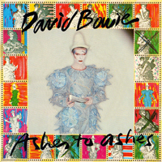
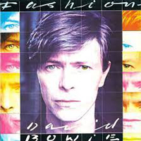
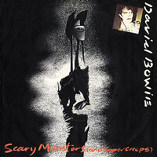
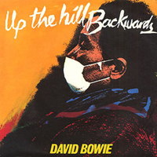

1980 - SCARY MONSTERS |
||||
A large-scale collage pieced together from a photo taken by Brian Duffy and a painting by British artist Edward Bell, Scary Monsters (And Super Creeps) pictures Bowie in the Pierrot costume he'd worn in the Ashes To Ashes video. Nods to his "Berlin Trilogy" of albums - Low, "Heroes" and Lodger - along with Aladdin Sane (whose cover photo had also been taken by Duffy) appeared on the rear sleeve. Photographer: Brian Duffy | Designer: Edward Bell |
||||
IT'S NO GAME (PART 1) "1-2, 1-2-2" Shiruetto ya kage ga kakumei o miteiru Mo tengoku no giyu no kaidan wa nai Silhouettes and shadows Watch the revolution No more free steps to heaven! It's no game Ore genjitsu kara shime dasare Nani ga okkote irunoka wakara nai Doko ni kyokun wa arunoka hitobito wa yubi o orareteiru Konna dokusaisha ni iyashime rareru nowa kanashii I am bored from the event I really don't understand the situation! And it's no game Documentaries on refugees Couples 'gainst the target You throw a rock against the road And it breaks into pieces Draw the blinds on yesterday And it's all so much scarier Put a bullet in my brain And it makes all the papers Nammin no kiroku eiga Hyoteki o se ni shita koibito tachi Michi ni ishi o nage reba kona gona ni kudake Kino ni huta o sureba kyohu wa masu Ore no atama ni tama o buchi kome ba Shinbun wa kaki tateru So where's the moral When people have their fingers broken? To be insulted by these fascists It's so degrading And it's no game Shut up! Shut u ... UP THE HILL BACKWARDS The vacuum created By the arrival of freedom And the possibilities it seems to offer It's got nothing to do with you If one can grasp it It's got nothing to do with you If one can grasp it A series of shocks - sneakers fall apart Earth keeps on rolling Witnesses falling It's got nothing to do with you If one can grasp it It's got nothing to do with you If one can grasp it Yeah, yeah, yeah Up the hill backwards It'll be alright ooh-ooh While we sleep they go to work We're legally crippled It's the death of love It's got nothing to do with you If one can grasp it It's got nothing to do with you If one can grasp it More idols than realities I'm OK, you're so-so Yeah, yeah, yeah - up the hill backwards It'll be alright ooh-ooh SCARY MONSTERS (AND SUPER CREEPS) She had an horror of rooms, she was tired, you can't hide beat When I looked in her eyes, they were blue but nobody home Well, she could've been a killer if she didn't walk the way she do And she do She opened strange doors that we'd never close again She began to wail jealousy's scream Waiting at the lights, know what I mean Scary monsters, super creeps Keep me running, running scared Scary monsters, super creeps Keep me running, running scared She asked me to stay and I stole her room She asked for my love and I gave her a dangerous mind Now she's stupid in the street and she can't socialise Well, I love the little girl and I'll love her till the day she dies She wails Jimmy's guitar sound, jealousy's scream Waiting at the lights, know what I mean Scary monsters, super creeps Keep me running, running scared Scary monsters and super creeps Keep me running, running scared Scary monsters and super creeps Keep me running, running scared Scary monsters and super creeps Keep me running, running scared ASHES TO ASHES Do you remember a guy that's been In such an early song I've heard a rumour from Ground Control Oh no, don't say it's true They got a message from the Action Man "I'm happy. Hope you're happy, too. I've loved. All I've needed: love. Sordid details following." The shrieking of nothing is killing me Just pictures of Jap girls in synthesis And I ain't got no money and I ain't got no hair But I'm hoping to kick but the planet is glowing Ashes to ashes, funk to funky We know Major Tom's a junkie Strung out in heaven's high Hitting an all-time low Time and again I tell myself I'll stay clean tonight But the little green wheels are following me Oh, no, not again I'm stuck with a valuable friend "I'm happy. Hope you're happy, too." One flash of light But no smoking pistol I never done good things I never done bad things I never did anything out of the blue, Want an axe to break the ice Wanna come down right now Ashes to ashes, funk to funky We know Major Tom's a junkie Strung out in heaven's high Hitting an all-time low My mama said, "To get things done You'd better not mess with Major Tom." My mama said, "To get things done You'd better not mess with Major Tom." FASHION There's a brand new dance but I don't know its name That people from bad homes do again and again It's big and it's bland, full of tension and fear They do it over there but we don't do it here Fashion! Turn to the left Fashion! Turn to the right Ooh, fashion! We are the goon squad and we're coming to town Beep-beep Beep-beep Listen to me - don't listen to me Talk to me - don't talk to me Dance with me - don't dance with me, no Beep-beep There's a brand new talk but it's not very clear That people from good homes are talking this year It's loud and tasteless and I've heard it before You shout it while you're dancing on the dance floor Oh bop, fashion Fashion! Turn to the left Fashion! Right Fashion! We are the goon squad And we're coming to town Beep-beep Beep-beep Listen to me - don't listen to me Talk to me - don't talk to me Dance with me - don't dance with me, no Beep-beep Beep-beep Oh, bop, do do do do do do do do Fa-fa-fa-fa-fashion Oh, bop, do do do do do do do do Fa-fa-fa-fa-fashion La-la la la la la la-la TEENAGE WILDLIFE Well, how come you only want tomorrow? With its promise of something hard to do A real life adventure worth more than pieces of gold Blue skies above and sun on your arms Strength in your stride and hope in those squeaky clean eyes You'll get chilly receptions everywhere you go Blinded with desire – I guess the season is on So you train by shadow boxing, search for the truth But it's all, but it's all used up Break open your million dollar weapon And you push your luck, still you push, still you push your luck A broken nosed mogul, are you one of the New Wave boys? Same old thing in brand new drag Comes sweeping into view, oh-oh-oh, oh-oh-oh As ugly as a teenage millionaire Pretending it's a whizz kid world You'll take me aside, and say "Well, David, what shall I do? They wait for me in the hallway" I'll say "Don't ask me, I don't know any hallways" But they move in numbers and they've got me in a corner I feel like a group of one, no-no They can't do this to me I'm not some piece of teenage wildlife Those midwives to history put on their bloody robes And the word is that the hunted one is out there on his own And you're alone for maybe the last time And you breathe for a long time Then you howl like a wolf in a trap And you daren't look behind You fall to the ground like a leaf from the tree And look up one time at that vast blue sky Scream out aloud as they shoot you down No, no I'm not some piece of teenage wildlife I'm not a piece of teenage wildlife And no one will have seen and no one will confess The fingerprints will prove that you couldn't pass the test There'll be others on the line filing past Who'll whisper low I miss you he really had to go Well, each to his own, he was another piece of teenage wildlife Oh-oh-oh-oh, oh Another piece of teenage wildlife, oh-oh-oh-oh-oh, oh-oh Another piece of teenage wild... life Wild Wild... life SCREAM LIKE A BABY Well, I wouldn't buy no merchandise And I wouldn't go to war And I mixed with other colours But the nurse doesn't care And I hide under blankets Or did I run away I really can't remember Last time I saw the light of day But I remember Sam 'Cause he was like me Scream like a baby Sam was a gun And I never knew his last name And we never had no fun Well, they came down hard on the faggots And they came down hard on the street They came down harder on Sam And they all knew he was beat He was thrown into the wagon Blindfolded, chains and they stomped on us And took away our clothes and things And pumped us full of strange drugs And, oh, I saw Sam falling Spitting in their eyes But now I lay me down to sleep And now I close my eyes Now I'm learning to be a part of societ... societ... s Scream like a baby Sam was a gun And I never knew his last name And we never had no fun No athletic program No discipline, no book He just sat in the backseat Swearing he'd seek revenge But he jumped into the furnace Singing old songs we loved Scream like a baby Sam was a gun And I never knew his last name And we never had no fun Scream like a baby Sam was a gun And I never knew his last name And we never had no fun KINGDOM COME Well, I walked in the pouring rain And I heard a voice that cries, "It's all in vain!" The voice of doom was shining in my room I just need one day somewhere far away Oh Lord, I just need one day Well, I've been breaking these rocks And cutting this hay Yes, I've been breaking these rocks What's my price to pay? Well, the river's so muddy, but it may come clear And I know too well what's keeping me here I'm just a slave of a burning ray Oh, give me the night, I can't take another sight Please, please give me the night Been breaking these rocks And cutting this hay Yes, I've been breaking these rocks What's my price to pay? Sun keeps beating down on me, wall's a mile high Up in the tower they're watching me, hoping I'm going to die (I won't be breaking no rocks) I won't be breaking no rocks (I won't be breaking no rocks) I said I won't be breaking no rocks (I won't be breaking no rocks) Oh-oh-oh Who will pardon me? (I won't be breaking no rocks) (I won't be breaking no rocks) (I won't be breaking no rocks) When the kingdom comes (When the kingdom comes) (When the kingdom comes) BECAUSE YOU'RE YOUNG Psychodelicate girl - come out to play Little metal-faced boy Don't stay away They're so war-torn and resigned She can't talk anymore What are they trying to prove? What would they like to find? It's love back to front and no sides (like I say) These pieces are broken (like I say) These pieces are broken (hope I'm wrong but I know) Because you're young You'll meet a stranger some night Because you're young What could be nicer for you And it makes me sad So I'll dance my life away A million dreams, a million scars He punishes hard Was loving her such a crime? She took back everything she said Left him nearly out of his mind They're people I know – people I love They seem so unhappy – dead or alive It's love back to front and no sides (like I say) These pieces are broken (like I say) These pieces are broken (hope I'm wrong but I know) Because you're young You'll meet a stranger some night Because you're young What could be nicer for you And it'll make me sad So I'll dance my life away A million dreams, a million scars A million dreams A million scars A million IT'S NO GAME (PART 2) Silhouettes and shadows Watch the revolution No more free steps to heaven Just walkie-talkie - heaven or hearth Just big heads and drums - full speed and pagan And it's no game I am barred from the event I really don't understand the situation So where's the moral? People have their fingers broken To be insulted by these fascists it's so degrading And it's no game Documentaries on refugees Couples 'gainst the target Throw a rock against the road And it breaks into pieces Draw the blinds on yesterday And it's all so much scarier Put a bullet in my brain And it makes all the papers And it's no game Children round the world Put camel shit on the walls They're making carpets on treadmills Or garbage sorting And it's no game |
||||
SINGLES |
||||
    |
||||